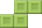
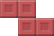
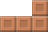
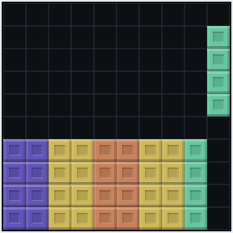

The seven pieces
Every piece is made of four blocks. Modern games give each one a fixed colour, and players call them by the letter they look like: I, O, T, S, Z, J and L.





Pieces always appear in the same colour, so after a while you stop reading shapes and start recognising colours, which is a lot faster.
Hold and the next queue
Hold puts the current piece aside so you can swap it back in later. You can only hold once per piece, so you can't swap back and forth forever.
The next queue shows the pieces that are coming. TETR.IO shows five, which means you can plan a few moves ahead instead of reacting to each piece as it lands.
Try this
Play a few games where you hold every I piece and only use it when the board is ready for it. Notice how often it was the piece you needed.
Clearing lines
A row clears when every cell in it is filled. Clearing one row is a single, two is a double, three is a triple and four at once is a quad, also called a Tetris.

- Single: 1 row
- Double: 2 rows
- Triple: 3 rows
- Quad (Tetris): 4 rows, only possible with an I piece